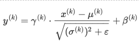
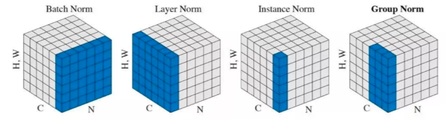

前言
cnn的常见问题，持续加更中～
加油~
Chapter-1
问题1：Softmax+Cross Entropy反向求导
问题2：BatchNorm层的详细解读(具体可以参考之后出版的百面深度学习2333)
- 
- 作用：
- 使得每层的输入/输出分布更加稳定，避免参数更新和网络层次变深大幅度影响数据分布。从而使模型训练更稳定。
参数 β 和 γ的作用
- 保留网络各层在训练过程中的学习成果
- 保证激活单元的非线性表达能力
- 使批归一化模块具有复原初始输出分布能力。
BN放在激活层之前还是之后
- 各种不同的Norm
- 阅读材料
问题3：Conv+BN加速策略
在inference阶段，可以将BN层的参数合并在之前的Linear或Conv层中，加速推断时间（因为二者都是线性变换）。1
2
3
4
5
6
7
8
9
10
11
12
13w = module.weight.data
b = module.bias.data # conv的bias可以用全0代替
ws = [1] * len(w.size())
ws[0] = w.size()[0]
invstd = bn_module.running_var.clone().add_(bn_module.eps).pow_(-0.5)
w.mul_(invstd.view(*ws).expand_as(w))
b.add_(-bn_module.running_mean).mul_(invstd)
if bn_module.affine:
w.mul_(bn_module.weight.data.view(*ws).expand_as(w))
b.mul_(bn_module.weight.data).add_(bn_module.bias.data)
问题4：常见的模型加速方法
问题5：目标检测里如何有效解决常见的前景少背景多的问题
- 采用Focal Loss或OHEM进行负样本挖掘，加大Hard Example损失权重
- 训练时只利用Ground Truth周边的Prior Boxes进行训练，忽略其他背景区域，只考虑困难背景区域
问题6：目标检测里有什么情况是SSD、YOLOv3、Faster R-CNN等所不能解决的，假设网络拟合能力无限强
问题7：分类和检索两个问题可以怎么理解
问题8：ROIPool和ROIAlign的区别，以及ROIAlign的简单实现（不考虑并行，cpu串行即可）
- ROIPool存在两次量化误差，首先是将候选框边界量化为整数点坐标值，其次是将量化后的边界区域平均分割成 k x k 个单元，对每一个单元的边界进行量化。ROIAlign通过双线性插值避免了量化操作，保存了原始ROI的空间分布，有效避免了误差的产生；对于检测图片中大目标物体时，两种方案的差别不大，而如果是图片中有较多小目标物体需要检测，则优先选择ROIAlign，更精准一些
问题9：深度神经网络常见的参数初始化方式，如果全部初始化为0，会出现什么情况
问题10：多卡并行的时候怎么实现参数共享，通信梯度是指平均梯度，还是最大梯度，还是梯度总和
问题11：介绍常见的梯度下降优化方法
问题12: 神经网络（卷积/全连接）反向传播公式推导
问题13: Focal Loss解决了什么问题，如何解决的，与OHEM有什么不同
问题14: 斜着的矩形框如何求iou, 两个多边形的框如何求iou
首先要求解两个多边形的面积，方法见该链接
关键在于如何求出交集的面积
思路一
蒙特卡洛 + 采样，近似求解交集的面积，但是中间涉及判断点在不在多边形内，判断点是否在多边形内
思路二
适合于两个凸多边形（非凸没想到好的思路），凸多边形可以看做是半平面的交集，因此两个凸多边形的交集，可以看作是（m+n）个半平面的交集（假设两个凸多边形分别有m个顶点和n个顶点），求出来半平面的交集（仍旧是一个凸多边形）之后，求解该多边形的面积即可。求解半平面交集
问题15: Detection你觉的还有哪些可做的点
问题16: 卷积底层如何实现的
问题17: mini-Batch SGD相对于GD有什么优点
问题18: DCN比普通卷积多了多少计算量
问题19: SyncBN如何实现的
问题20：当需要添加背景类时，怎样处理比较合理
问题21：给出语义分割评估指标mIOU的计算公式和实现
问题22：人体姿态估计主流的两个做法是啥？简单介绍下
问题23：介绍带孔卷积以及其优势与劣势
问题24：Non-local模块与Self-attention的之间的关系与区别
问题25：PyTorch和TensorFlow的运行原理
问题26：卷积的实现原理以及如何快速高效实现局部weight sharing的卷积操作方式
问题27：详解几种优化算法
问题28：BN在training和inference的时候有什么区别
- 在训练时，我们可以计算出batch的均值和方差，迭代训练过程中，均值和方差一直在发生变化。但是在推理时，均值和方差是固定的，对于均值来说直接计算所有batch u值的平均值，对于标准偏差采用每个batch σB的无偏估计。